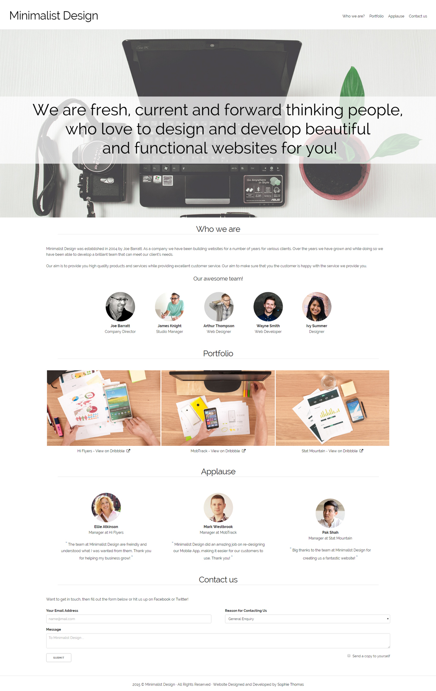
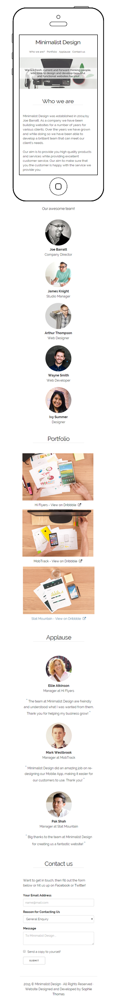

Minimalist Design
Project Completion Date: 16th July, 2015
For this project, I used to the basis of a Web Design company and developed a website around the services they provide and projects they have completed for various clients.
When designing and coding this website I kept three common trends at the forefront. These trends were Responsive Design, Single-Page Website Design and Minimalist Design. The result of doing this has given the website a good flow through each section.


The overall design of the website is simple. This makes the readability of the content much easier. High quality images and image overlay effects were added to the website to make it more appealing.
Overall, this website meets the intended purpose as it is a responsive single page website that has a minimalist design to it.
Please Note: Minimalist Design is a fictitious project.